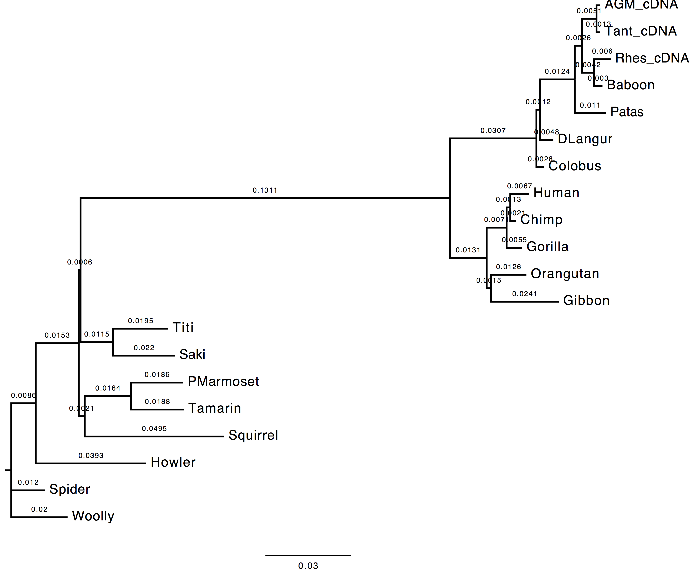

-
Slides day 1
Exercise 1 - Parameter estimation
Exercise 2 - Tree topologies
Exercise 3 - Model comparison
Exercise 4 - Branch support
Exercise 5 - Command line
Exercise 6 - Inferring ML phylogenies with codon models
Exercise 7 - Inferring ML phylogenies using real datasets
Exercise 8 - Re-Analyze published datasets
Solution 1 - Parameter estimation
Inferring phylogenies using maximum likelihood
Observing the effect of parameter estimation from data on the inferred tree topology.
In this exercise you are asked to run PhyML twice in order to compare the effect of estimating nucleotide frequencies from the used dataset vs. optimising them with a maximum likelihood (ML) approach.
First Run
- Nucleotide substitution model = HKY85 + Gamma
- Estimating transition/transversion ratio ( parameter of HKY85 model)
- Estimating alpha parameter (remember for gamma distributions used in phylogenetics)
- Estimating nucleotide frequencies with ML
Here is the list of the parameters to change:
From 2nd menu
[M] ................. Model of nucleotide substitution HKY85
[F] ................. Optimise equilibrium frequencies yes
[T] .................... Ts/tv ratio (fixed/estimated) estimated
[C] ........... Number of substitution rate categories 4
[G] ............. Gamma distributed rates across sites yes
[A] ... Gamma distribution parameter (fixed/estimated) estimated
Second Run
- Nucleotide substitution model = HKY85 + Gamma
- Estimating transition/transversion ratio ( parameter of HKY85 model)
- Estimating alpha parameter (remember for gamma distributions used in phylogenetics)
- Estimating nucleotide frequencies empirically from the data
Here is the list of the parameters to change:
From 2nd menu
[M] ................. Model of nucleotide substitution HKY85
[F] ................. Optimise equilibrium frequencies no
[T] .................... Ts/tv ratio (fixed/estimated) estimated
[C] ........... Number of substitution rate categories 4
[G] ............. Gamma distributed rates across sites yes
[A] ... Gamma distribution parameter (fixed/estimated) estimated
Questions
1. Do you see much difference in the tree?
The topology does not change, however we can observe a change in the computed branch lengths.
| Nt-frequencies optimised | Nt-frequencies estimated |
|---|---|
 |
 |
2. In the likelihood value (stat file)?
The likelihood value of the tree inferred using the nucleotide frequencies estimated empirically from the dataset is lower than the likelihood value of the tree inferred using the nucleotide frequencies estimated via ML. This is due to dataset dimensions (the number of the sequences used).
run 1: -6172.58045
run 2: -6173.49655
3. Which option is best and why do you think so?
The best option in this case is to use the ML approach since the ML optimisation technique provides better estimates for the nucleotide frequencies, which, in turn, affect the likelihood of the inferred tree. This is due to the nucleotide frequencies which are used in the calculation of the likelihood of each site of the alignment (, where is the vector of the nucleotide frequencies and the rate matrix).
phylogenies tree-estimation maximum-likelihood parameter-estimation